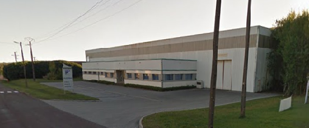

CLAIRALU
Zone Industrielle BP32
70140 Pesmes
Tél. : 03 84 31 21 25
Fax : 03 54 31 24 50
e-mail : clair.alu@wanado.fr
© CLAIRALU 2015 - Mentions légales - Partenaires
Notre société fondée en 1988, grace a son experience et a son savoir faire, elle a reussi a s'dapter et a evoluer dans le mileu de latôlerie industrielle. Cette évolution est du par notre expériance et de la qualité du travail que fait.
Notre société dispose de 3000 m², avec au sein de l'etablissement 10 personnes. Nous sommes installé en Haute-Saône (70).

A partir de cette date, commence la fabrication d'éléments accessoires de couvertures et bardages pour les étancheurs et les couvreurs.
Dernière réalisation

L'utilisation du métal pour l'habillage de façades, d'escalators (exemple : ...